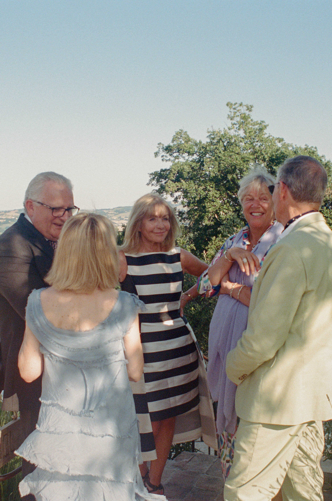
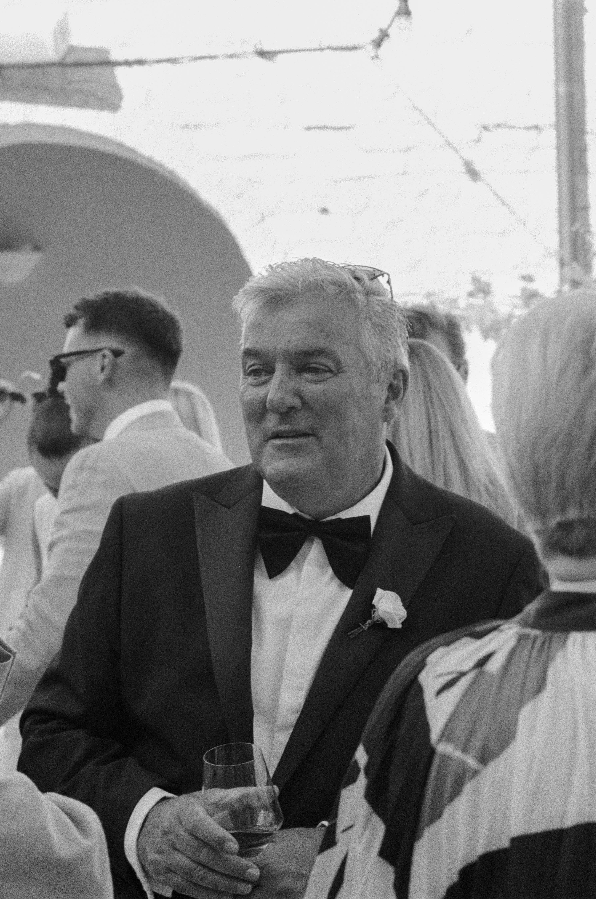
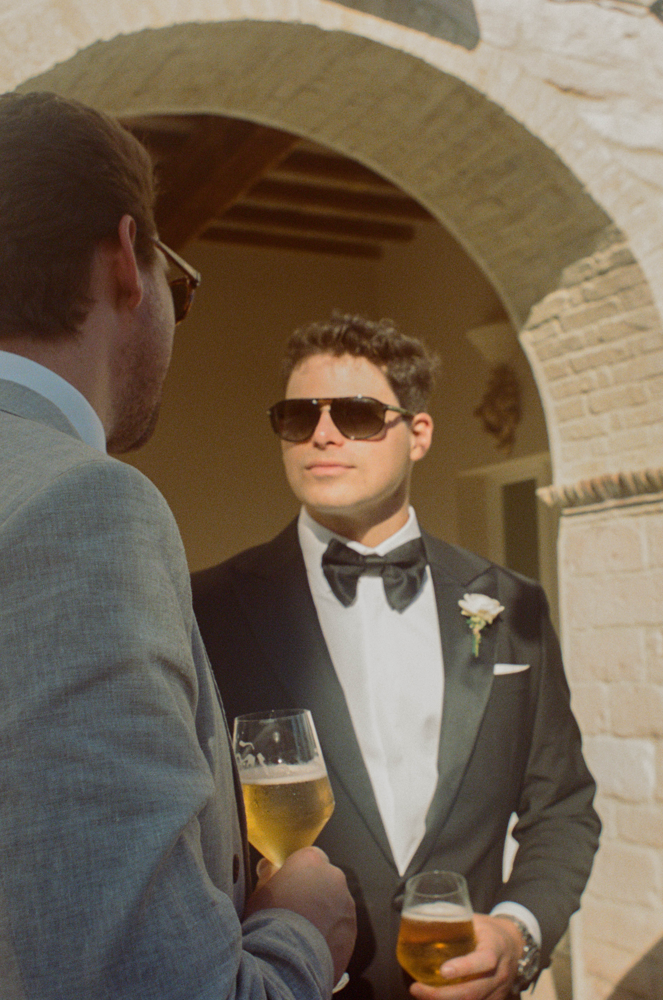
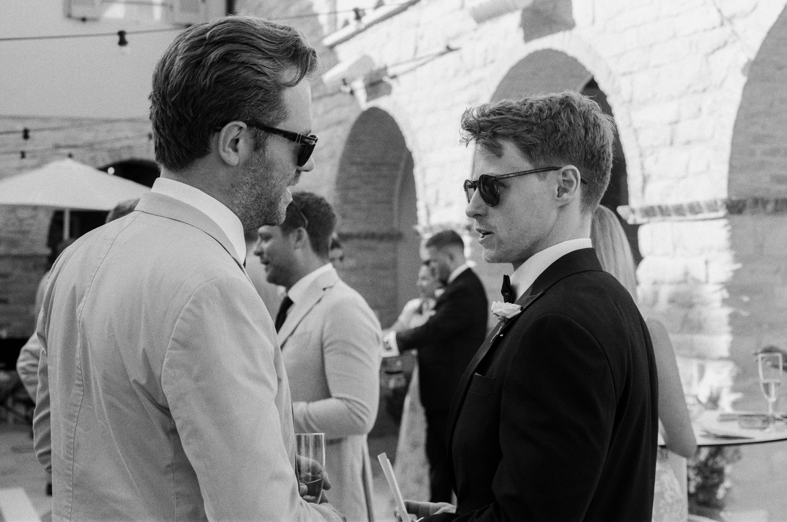

Operating quietly on the periphery as a secondary photographer allows me to bypass the structured choreography of the day. Free from the constraints of formal posing, my focus turns outward to capture the unscripted, human geometry shared between guests—the fleeting glances, silent gestures, and authentic energy that build the real narrative around the edges of a celebration.



